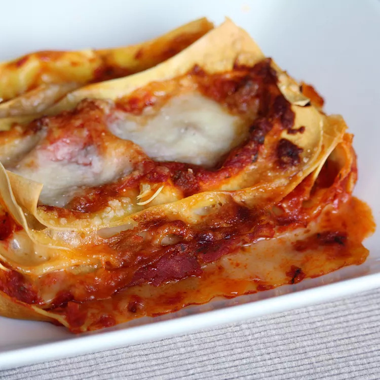

Lasagna de perfectit

Description
This lasagna is to die for! They have been in the family dessert list
for generations!
Ingredients
- 5 tablespoon butter
- 2/3 cup all-purpose flour
- 3 1/4 cups milk
- 1/2 teaspoon ground nutmeg
- ¼ teaspoon salt
- 1/4 teaspoon pepper
Steps
-
Heat olive oil in a saucepan over medium heat; cook and stir onion,
carrot, shallot, and prosciutto until onion is translucent and
prosciutto releases some fat, about 10 minutes. Add pork and beef;
season with 1 teaspoon nutmeg, cinnamon, and salt to taste. Cook and
stir over medium-high heat until browned and crumbly, about 10 minutes.
-
Pour red wine over meat mixture; increase heat and cook until wine
evaporates, about 3 minutes. Add tomatoes and mix well; bring to a boil,
cover, reduce heat, and simmer, stirring occasionally, until tomatoes
break down and flavors of Bolognese sauce have combined, 1 1/2 to 2
hours.
-
Melt butter in a saucepan over medium-low heat; add flour. Whisk
vigorously until mixture is smooth. Pour in milk and cook, stirring
occasionally, over medium heat until white sauce thickens enough to
cover the back of a spoon, about 10 minutes; season with 1/2 teaspoon
nutmeg, salt, and pepper.
-
Bring a large pot of lightly salted water to a boil. Cook lasagna
noodles in the boiling water, stirring occasionally until tender yet
firm to the bite, about 8 minutes. Drain and run under cold water to
stop the cooking process. Lay noodles on a clean towel and pat dry.
- Preheat oven to 350 degrees F (175 degrees C).
-
Pour a ladleful of Bolognese sauce and a ladleful of white sauce over
the bottom of a 9x13-inch baking dish; top with 3 or 4 lasagna noodles.
Cover noodles with 1/3 of the white sauce and 1/3 of the Bolognese
sauce. Sprinkle some of the Parmesan cheese on top; cover with lasagna
noodles. Repeat layers, ending with white sauce and Parmesan cheese.
-
Bake in the preheated oven until bubbling and top is golden brown, 30 to
40 minutes. Let stand 3 to 4 minutes before slicing.